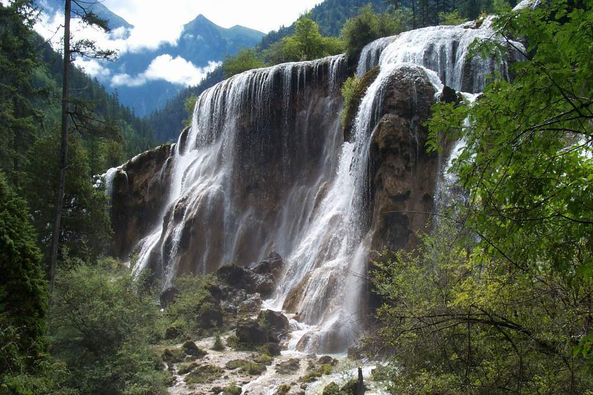
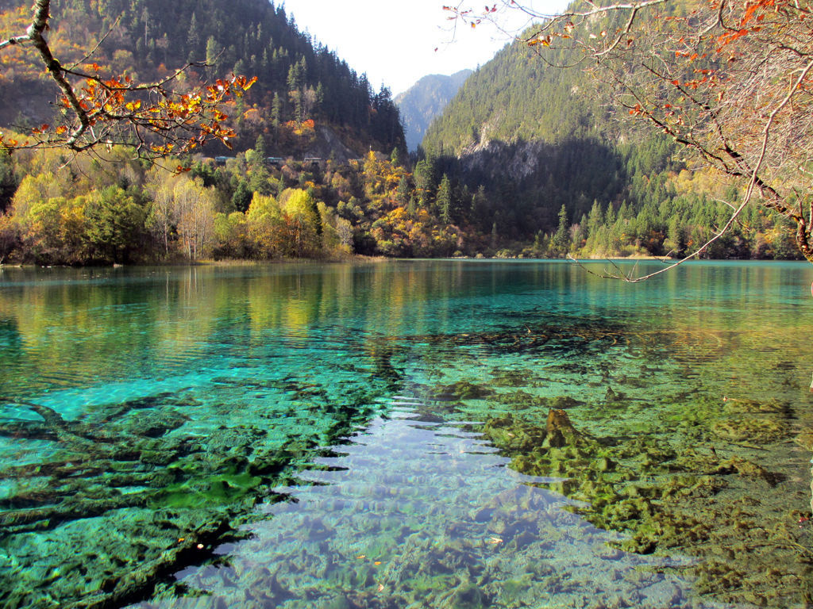

九寨沟总面积约620平方公里。其中52%为林木繁茂的原始森林。 自然景色兼有湖泊、瀑布、雪山、森林之美，有“童话世界”的美誉。大多数景点集中于“Y"字形的三条主沟内，纵横50公里。根据专家的考察，这种高山湖泊是在地球新构造运动中，地壳发生急剧变化，山体不平衡隆起和河流侵蚀作用形成的。分冰川剥蚀、岩溶洼地阻塞湖、泥石流堰塞湖、滑坡与崩塌堰塞湖四大类。他们的共同特点是：水色清澈透明，幽静深邃，彼此以台瀑相连，逶迤不绝，小的有半亩，大的有千亩以上。四岸有千年古木，奇花异草，四时变化，色彩纷呈，倒影斑斓，气象万千。其中最大的长海，长7公里，海拔3000米，澄如碧潭，冬可滑冰，夏可行船。临近的五花海，由于湖底有各种色素的矿物质和枯枝败叶、海藻等沉积物，经过阳光的折射，幻出丰富多姿的色彩，成为名副其实的彩色湖。
九寨沟现已规划为：树正景区(火花海、卧龙海、犀牛海、古磨房和树正瀑布)；日则景区(珍珠滩、诺日朗瀑布、珍珠滩瀑布、高瀑布)；剑岩景区(天鹅海、悬泉、剑岩原始森林、熊猫海)；长海景区(长海、五花海、上季节海、下季节海)；扎如景区(骑马、野餐、藏族村寨民俗)等几个景区。已开发出二滩、三沟、四瀑、十八群海。最著名的景点有剑悬泉、芳草海、天鹅湖、剑竹海、熊猫海、高瀑布、五花海、珍珠滩瀑布、镜海、诺日朗瀑布、犀牛海、树正瀑布、树正群海、卧龙海、火花海、芦苇海、留景滩、长海、五彩池、上、下季节海等。各景点之间栈道幽深，小桥横跨，村寨古朴，民风各异，令人有飘然出世的超凡脱俗之感。妩媚的春日，九寨沟众多景点 万紫千红；炎炎夏日，则浓荫滴翠；醉人之金秋，则五彩斑斓；严寒隆冬，其景色则冰清玉洁。真可谓四季分明，各有千秋，其中尤以金秋最为迷人。
深藏在林中的108个高原湖泊---海子,每到其时,天高气爽,碧水澄澈。映衬着漫山遍野绚丽多彩的秋林,水底五彩石,天上飘白云,如梦似幻,如醉如痴。火花海、五彩池等景点因池水清澈,湖底石质晶莹而折射阳光,呈现出梦幻似的光彩,步移景换,犹如进入了童话世界,珍珠滩水波粼粼,如飞珠碎玉。诺日朗瀑布宽达100余米,从30米高的石崖上,飞泻而下,色彩明艳,另具一番秀雅自然,清纯优美的风韵。
九寨沟的森林2万余公顷,在2000米至4000米的高山上垂直密布。主要品种有红松、云杉、冷杉、赤桦、领春木、连香树等。在这里的原始森林中,栖息着珍贵的大熊猫、白唇鹿、苏门羚、扭角羚、毛冠鹿、金猫等动物。海子中野鸭成群，天鹅、鸳鸯也常来嬉戏，是我国著名的自然保护区之一。
